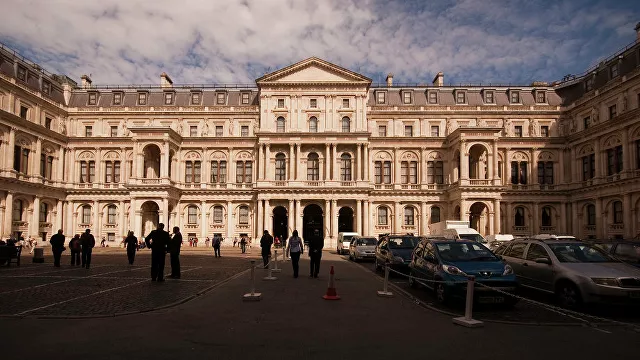
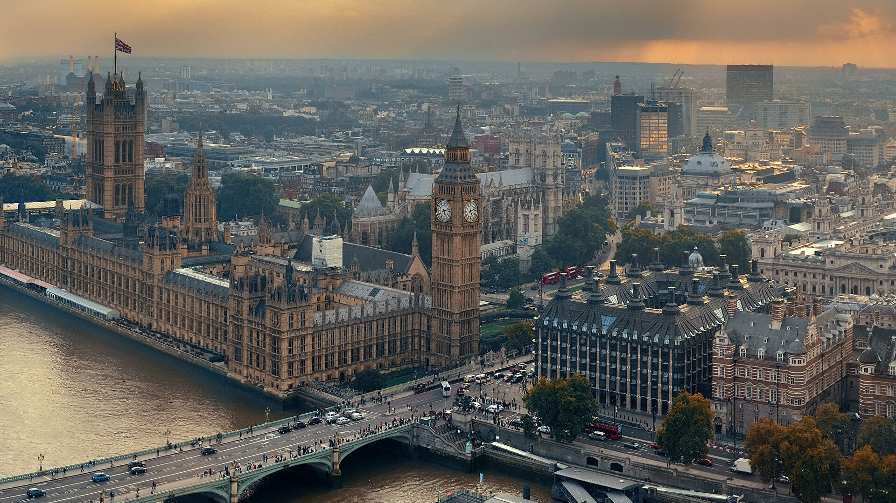
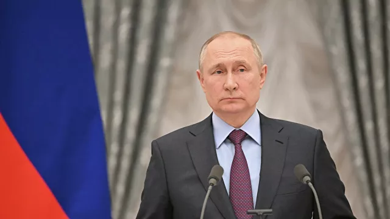

МИД Британии заявил о санкциях,которые
"нанесут ущерб" экономике России
Глава МИД Британии заявила послу РФ о намерении ввести санкции в качестве "возмездия за вторжение"

Министр иностранных дел Великобритании Лиз Трасс заявила послу РФ в Соединенном Королевстве Андрею Келину, что в отношении Москвы со стороны Лондона будут введены санкции, "наносящие ущерб экономике", говорится в сообщении британского внешнеполитического ведомства.
"Министр иностранных дел осудила возмутительное нападение России на Украину как явное нарушение международного права. Она повторила, что в качестве возмездия за вторжение будут введены суровые санкции,
которые нанесут ущерб российской экономике и тем, кто тесно связан с Кремлем", – цитирует РИА Новости распространенный комментарий.

Трасс призвала также Россию "вывести свои войска" с территории Украины.
"Она проинформировала посла о том, что Великобритания продолжит тесно сотрудничать с международными партнерами, и призвала Россию вывести свои войска", – говорится в сообщении британского МИД.
Путин заявил о вынужденном характере операции в Донбассе
Президент России Путин: операция в Донбассе является вынужденной мерой

Проводимая российскими Вооруженными силами операция в Донбассе является вынужденной мерой, заявил президент России Владимир Путин на встрече с представителями бизнеса. Об этом сообщает РИА Новости.
Глава государства отметил, что России фактически не оставили выбора, так как все предпринятые до этого Россией попытки урегулировать ситуацию были, по словам главы государства, нулевыми.
В четверг Владимир Путин в телеобращении к россиянам сообщил, что в соответствии с Уставом ООН, с санкции Совета Федерации и во исполнение договоров о дружбе и взаимопомощи с ДНР и ЛНР принял решение о проведении специальной военной операции в Донбассе.
Российский лидер заявил, что обстоятельства "требуют от нас решительных и незамедлительных действий, народные республики Донбасса обратились к России с просьбой о помощи".
Президент РФ подчеркнул, что ответственность за кровопролитие на Украине будет на совести киевского режима. Путин призвал украинских военнослужащих не выполнять преступных приказов, "сложить оружие и идти домой".
Ранее радио Sputnik сообщило, что Владимир Зеленский обсудил с президентом Франции Эммануэлем Макроном возможность отключения России от международной системы межбанковских платежей SWIFT.